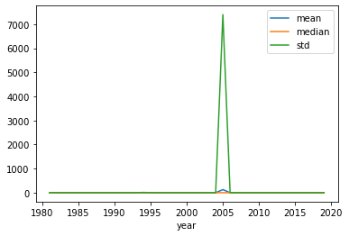

import pandas as pd
import statsmodels.api as sm
pd.options.display.max_rows = 20L21: Backtesting - sumstats
Data
Load cleaned data from last lecture
# Load cleaned Compustat data from last lecture
comp_cgs = pd.read_pickle('../data/comp_cgs.zip')
comp_cgs.head(2)| permno | year | dtdate | AG | L2AG | at | Leverage | ROA | |
|---|---|---|---|---|---|---|---|---|
| 2 | 10001 | 1987 | 1987-06-30 | -0.038474 | NaN | 11.771 | 0.255432 | 0.026506 |
| 3 | 10001 | 1988 | 1988-06-30 | -0.003058 | -0.038474 | 11.735 | 0.244669 | 0.046187 |
# Load cleaned CRSP data (for table 1) from last lecture
crsp_table1 = pd.read_pickle('../data/crsp_cgs_table1.zip')
crsp_table1.head(2)| permno | mdate | MV | BHRET6 | BHRET36 | FBHRET12 | |
|---|---|---|---|---|---|---|
| 0 | 10000 | 1986-02 | 11.96 | NaN | NaN | -0.875000 |
| 1 | 10000 | 1986-03 | 16.33 | NaN | NaN | -0.943662 |
Merge Compustat data from year t, with CRSP data from June, year t+1
# Keep only the CRSP data in Junes
crsp_table1 = crsp_table1.loc[crsp_table1['mdate'].dt.month==6,:].copy()
crsp_table1.head()| permno | mdate | MV | BHRET6 | BHRET36 | FBHRET12 | |
|---|---|---|---|---|---|---|
| 4 | 10000 | 1986-06 | 11.734594 | NaN | NaN | NaN |
| 20 | 10001 | 1986-06 | 6.033125 | NaN | NaN | 0.023884 |
| 32 | 10001 | 1987-06 | 5.822125 | -0.131644 | NaN | 0.140535 |
| 44 | 10001 | 1988-06 | 6.200000 | 0.101995 | NaN | 0.199810 |
| 56 | 10001 | 1989-06 | 7.007000 | 0.136718 | 0.401108 | 0.468434 |
# Create year variable in CRSP data
crsp_table1['crsp_year'] = crsp_table1['mdate'].dt.year
crsp_table1.head()| permno | mdate | MV | BHRET6 | BHRET36 | FBHRET12 | crsp_year | |
|---|---|---|---|---|---|---|---|
| 4 | 10000 | 1986-06 | 11.734594 | NaN | NaN | NaN | 1986 |
| 20 | 10001 | 1986-06 | 6.033125 | NaN | NaN | 0.023884 | 1986 |
| 32 | 10001 | 1987-06 | 5.822125 | -0.131644 | NaN | 0.140535 | 1987 |
| 44 | 10001 | 1988-06 | 6.200000 | 0.101995 | NaN | 0.199810 | 1988 |
| 56 | 10001 | 1989-06 | 7.007000 | 0.136718 | 0.401108 | 0.468434 | 1989 |
# Add 1 to the year in Compustat, so that accounting data in year t gets merged with returns from year t+1
comp_cgs['next_year'] = comp_cgs['year'] + 1# Merge Compustat data from year t, with CRSP data from June, year t+1
andata = comp_cgs.merge(crsp_table1, how = 'inner',
left_on = ['permno','next_year'], right_on = ['permno','crsp_year'])
andata.head()| permno | year | dtdate | AG | L2AG | at | Leverage | ROA | next_year | mdate | MV | BHRET6 | BHRET36 | FBHRET12 | crsp_year | |
|---|---|---|---|---|---|---|---|---|---|---|---|---|---|---|---|
| 0 | 10001 | 1987 | 1987-06-30 | -0.038474 | NaN | 11.771 | 0.255432 | 0.026506 | 1988 | 1988-06 | 6.20000 | 0.101995 | NaN | 0.199810 | 1988 |
| 1 | 10001 | 1988 | 1988-06-30 | -0.003058 | -0.038474 | 11.735 | 0.244669 | 0.046187 | 1989 | 1989-06 | 7.00700 | 0.136718 | 0.401108 | 0.468434 | 1989 |
| 2 | 10001 | 1989 | 1989-06-30 | 0.582020 | -0.003058 | 18.565 | 0.643801 | 0.065069 | 1990 | 1990-06 | 10.05225 | -0.011095 | 1.009441 | 0.140009 | 1990 |
| 3 | 10001 | 1990 | 1990-06-30 | 0.017021 | 0.582020 | 18.881 | 0.396984 | 0.059901 | 1991 | 1991-06 | 11.26650 | 0.137278 | 1.008516 | 0.175542 | 1991 |
| 4 | 10001 | 1991 | 1991-06-30 | 0.038028 | 0.017021 | 19.599 | 0.380012 | 0.054748 | 1992 | 1992-06 | 12.63125 | -0.168310 | 0.967890 | 0.466211 | 1992 |
andata.shape(138746, 15)Figure 1
# Figure 1 from the paper
stats = andata.groupby('year')['AG'].agg(['mean','median','std'])
stats.head()| mean | median | std | |
|---|---|---|---|
| year | |||
| 1981 | 0.199782 | 0.103294 | 0.475629 |
| 1982 | 0.120727 | 0.054256 | 0.500300 |
| 1983 | 0.206967 | 0.075210 | 1.162631 |
| 1984 | 0.183264 | 0.092669 | 0.523415 |
| 1985 | 0.177480 | 0.070489 | 0.910923 |
stats.plot();
# Winsorize AG and try Figure 1 again
andata['AG_wins'] = andata['AG'].clip(lower=andata['AG'].quantile(0.01),
upper=andata['AG'].quantile(0.99))
# Figure 1
andata.groupby('year')['AG_wins'].agg(['mean','median','std']).plot();
Create asset-growth (AG) deciles
# Create AG deciles (every year)
andata['AG_decile'] = andata.groupby('year')['AG']\
.transform(lambda x:
pd.qcut(x, q=10, labels=range(1,11))
)# Check how many observations in each AG decile
andata['AG_decile'].value_counts(sort=False)1 13890
2 13874
3 13871
4 13870
5 13876
6 13867
7 13867
8 13874
9 13871
10 13886
Name: AG_decile, dtype: int64# Save for later use
andata[['permno','mdate','AG_decile']].copy().to_pickle('../data/cgs_AG_deciles.zip')Summary statistics (Table 1)
# Restrict the sample period to the one in the paper
andata = andata.loc[andata['year'].between(1968,2002),:].copy()
andata['year'].describe()count 88567.000000
mean 1992.010275
std 6.216007
min 1981.000000
25% 1987.000000
50% 1992.000000
75% 1997.000000
max 2002.000000
Name: year, dtype: float64# Create list with variable names we want to summarize
sumthese = ['AG','L2AG','at','MV','Leverage','ROA','BHRET6','BHRET36']# Calculate median values within each AG decile, every year
medians = andata.groupby(['AG_decile','year'])[sumthese].median()
medians| AG | L2AG | at | MV | Leverage | ROA | BHRET6 | BHRET36 | ||
|---|---|---|---|---|---|---|---|---|---|
| AG_decile | year | ||||||||
| 1 | 1981 | -0.156534 | NaN | 21.1345 | 7.203563 | 0.229742 | -0.015460 | -0.074537 | NaN |
| 1982 | -0.238448 | 0.027319 | 9.2700 | 12.730500 | 0.183496 | -0.139899 | 0.544236 | 0.095549 | |
| 1983 | -0.229104 | -0.039075 | 14.6480 | 8.373375 | 0.201748 | -0.142807 | -0.151481 | -0.583333 | |
| 1984 | -0.234161 | -0.022007 | 12.7145 | 8.697719 | 0.190783 | -0.196343 | 0.055556 | -0.407168 | |
| 1985 | -0.313274 | -0.010333 | 10.1480 | 9.214063 | 0.180496 | -0.300224 | 0.073529 | -0.722479 | |
| ... | ... | ... | ... | ... | ... | ... | ... | ... | ... |
| 10 | 1998 | 1.229145 | 0.248939 | 167.6615 | 169.757875 | 0.785783 | 0.021279 | -0.029114 | 0.116597 |
| 1999 | 1.357963 | 0.212174 | 209.6170 | 311.982062 | 0.493111 | 0.011233 | -0.109476 | 0.591549 | |
| 2000 | 1.922917 | 0.187752 | 229.2415 | 344.086705 | 0.107849 | -0.058293 | -0.130450 | 0.488128 | |
| 2001 | 0.765903 | 0.211994 | 234.1040 | 280.906659 | 0.271175 | 0.020858 | -0.251107 | 0.222919 | |
| 2002 | 0.571702 | 0.124097 | 249.1590 | 375.585791 | 0.275448 | 0.038501 | 0.190315 | 0.366243 |
220 rows 8 columns
# Calculate averages of the annual medians, for each AG portfolio separately (Table 1)
Table1 = medians.groupby('AG_decile')[sumthese].mean()
Table1| AG | L2AG | at | MV | Leverage | ROA | BHRET6 | BHRET36 | |
|---|---|---|---|---|---|---|---|---|
| AG_decile | ||||||||
| 1 | -0.292132 | -0.027666 | 19.849545 | 20.086016 | 0.128903 | -0.307385 | 0.080930 | -0.512516 |
| 2 | -0.113047 | 0.002830 | 47.862864 | 31.512131 | 0.198275 | -0.057847 | 0.094522 | -0.265142 |
| 3 | -0.038602 | 0.022827 | 101.886864 | 61.553354 | 0.234033 | 0.008679 | 0.096292 | -0.031078 |
| 4 | 0.008625 | 0.040892 | 155.610909 | 106.641705 | 0.241524 | 0.030996 | 0.089255 | 0.159314 |
| 5 | 0.047712 | 0.060157 | 186.173614 | 136.166537 | 0.248173 | 0.041317 | 0.088291 | 0.279760 |
| 6 | 0.089594 | 0.083457 | 171.516727 | 140.993278 | 0.234498 | 0.050478 | 0.080265 | 0.341050 |
| 7 | 0.142033 | 0.110151 | 155.325705 | 153.609485 | 0.224782 | 0.055813 | 0.079332 | 0.378675 |
| 8 | 0.222567 | 0.146551 | 127.493750 | 148.647825 | 0.241273 | 0.058865 | 0.066603 | 0.462167 |
| 9 | 0.385785 | 0.184534 | 100.010364 | 140.504525 | 0.298602 | 0.054623 | 0.047157 | 0.546036 |
| 10 | 1.000230 | 0.196424 | 90.351068 | 125.944899 | 0.476857 | 0.027607 | 0.006403 | 0.598836 |
Differences between high- and low-AG firms (Spreads)
# Calculate spreads (diffences) in meadians between AG deciles 1 and 10
d1 = medians.loc[1,:]
d1 | AG | L2AG | at | MV | Leverage | ROA | BHRET6 | BHRET36 | |
|---|---|---|---|---|---|---|---|---|
| year | ||||||||
| 1981 | -0.156534 | NaN | 21.1345 | 7.203563 | 0.229742 | -0.015460 | -7.453705e-02 | NaN |
| 1982 | -0.238448 | 0.027319 | 9.2700 | 12.730500 | 0.183496 | -0.139899 | 5.442360e-01 | 0.095549 |
| 1983 | -0.229104 | -0.039075 | 14.6480 | 8.373375 | 0.201748 | -0.142807 | -1.514806e-01 | -0.583333 |
| 1984 | -0.234161 | -0.022007 | 12.7145 | 8.697719 | 0.190783 | -0.196343 | 5.555555e-02 | -0.407168 |
| 1985 | -0.313274 | -0.010333 | 10.1480 | 9.214063 | 0.180496 | -0.300224 | 7.352940e-02 | -0.722479 |
| ... | ... | ... | ... | ... | ... | ... | ... | ... |
| 1998 | -0.318542 | -0.022003 | 22.4040 | 41.305687 | 0.061048 | -0.422993 | 8.552632e-02 | -0.562500 |
| 1999 | -0.292172 | -0.033717 | 25.9085 | 46.752984 | 0.073241 | -0.329393 | -6.060653e-09 | -0.400000 |
| 2000 | -0.299783 | -0.010038 | 45.3865 | 28.847051 | 0.059689 | -0.364766 | 2.000000e-01 | -0.694769 |
| 2001 | -0.473008 | 0.111816 | 42.4650 | 23.101199 | 0.023454 | -0.904887 | -3.348821e-01 | -0.823768 |
| 2002 | -0.421147 | -0.178360 | 47.3360 | 50.193000 | 0.041295 | -0.583128 | 4.857143e-01 | -0.824803 |
22 rows 8 columns
d10 = medians.loc[10,:]
d10| AG | L2AG | at | MV | Leverage | ROA | BHRET6 | BHRET36 | |
|---|---|---|---|---|---|---|---|---|
| year | ||||||||
| 1981 | 0.851511 | NaN | 27.2525 | 27.287156 | 0.519440 | 0.055673 | -0.234994 | NaN |
| 1982 | 0.587385 | 0.313213 | 34.2610 | 58.212000 | 0.531385 | 0.044799 | 0.406984 | 1.948354 |
| 1983 | 0.960828 | 0.167609 | 30.0000 | 38.586000 | 0.369032 | 0.049919 | -0.201324 | 0.445114 |
| 1984 | 0.815741 | 0.204685 | 29.5945 | 32.943000 | 0.527136 | 0.043982 | 0.083349 | 0.823529 |
| 1985 | 0.786492 | 0.221875 | 41.1470 | 63.686250 | 0.604671 | 0.041829 | 0.131579 | 0.243881 |
| ... | ... | ... | ... | ... | ... | ... | ... | ... |
| 1998 | 1.229145 | 0.248939 | 167.6615 | 169.757875 | 0.785783 | 0.021279 | -0.029114 | 0.116597 |
| 1999 | 1.357963 | 0.212174 | 209.6170 | 311.982062 | 0.493111 | 0.011233 | -0.109476 | 0.591549 |
| 2000 | 1.922917 | 0.187752 | 229.2415 | 344.086705 | 0.107849 | -0.058293 | -0.130450 | 0.488128 |
| 2001 | 0.765903 | 0.211994 | 234.1040 | 280.906659 | 0.271175 | 0.020858 | -0.251107 | 0.222919 |
| 2002 | 0.571702 | 0.124097 | 249.1590 | 375.585791 | 0.275448 | 0.038501 | 0.190315 | 0.366243 |
22 rows 8 columns
d_spread = d10 - d1
d_spread| AG | L2AG | at | MV | Leverage | ROA | BHRET6 | BHRET36 | |
|---|---|---|---|---|---|---|---|---|
| year | ||||||||
| 1981 | 1.008045 | NaN | 6.1180 | 20.083594 | 0.289698 | 0.071133 | -0.160457 | NaN |
| 1982 | 0.825834 | 0.285894 | 24.9910 | 45.481500 | 0.347889 | 0.184698 | -0.137252 | 1.852805 |
| 1983 | 1.189933 | 0.206684 | 15.3520 | 30.212625 | 0.167284 | 0.192726 | -0.049843 | 1.028447 |
| 1984 | 1.049902 | 0.226692 | 16.8800 | 24.245281 | 0.336353 | 0.240325 | 0.027793 | 1.230697 |
| 1985 | 1.099766 | 0.232208 | 30.9990 | 54.472188 | 0.424175 | 0.342053 | 0.058050 | 0.966360 |
| ... | ... | ... | ... | ... | ... | ... | ... | ... |
| 1998 | 1.547688 | 0.270942 | 145.2575 | 128.452188 | 0.724735 | 0.444273 | -0.114640 | 0.679097 |
| 1999 | 1.650134 | 0.245891 | 183.7085 | 265.229078 | 0.419870 | 0.340626 | -0.109476 | 0.991549 |
| 2000 | 2.222700 | 0.197790 | 183.8550 | 315.239654 | 0.048161 | 0.306473 | -0.330450 | 1.182897 |
| 2001 | 1.238911 | 0.100178 | 191.6390 | 257.805460 | 0.247722 | 0.925745 | 0.083775 | 1.046687 |
| 2002 | 0.992850 | 0.302457 | 201.8230 | 325.392791 | 0.234152 | 0.621630 | -0.295399 | 1.191046 |
22 rows 8 columns
# Calculate means for the spreads
Spread = d_spread.mean()
SpreadAG 1.292361
L2AG 0.224090
at 70.501523
MV 105.858883
Leverage 0.347954
ROA 0.334991
BHRET6 -0.074527
BHRET36 1.111352
dtype: float64# Convert spreads to a dataframe
Spread_df = pd.DataFrame(Spread, columns = ['Spread'], index = Table1.columns).transpose()
Spread_df| AG | L2AG | at | MV | Leverage | ROA | BHRET6 | BHRET36 | |
|---|---|---|---|---|---|---|---|---|
| Spread | 1.292361 | 0.22409 | 70.501523 | 105.858883 | 0.347954 | 0.334991 | -0.074527 | 1.111352 |
# Calculate tstatistics for the spreads
tstat = sm.stats.ttest_ind(d10.dropna(), d1.dropna())[0]
tstatarray([18.24803015, 14.81442456, 4.29417608, 4.53683213, 8.52451531,
9.47088405, -1.23559743, 10.80911867])# Convert it to a dataframe
tstat_df = pd.DataFrame(tstat, columns = ['tstat'], index = Table1.columns).transpose()
tstat_df| AG | L2AG | at | MV | Leverage | ROA | BHRET6 | BHRET36 | |
|---|---|---|---|---|---|---|---|---|
| tstat | 18.24803 | 14.814425 | 4.294176 | 4.536832 | 8.524515 | 9.470884 | -1.235597 | 10.809119 |
# Append spreads and tstats to the table
Table1_full = pd.concat([Table1, Spread_df, tstat_df], axis = 0)
Table1_full| AG | L2AG | at | MV | Leverage | ROA | BHRET6 | BHRET36 | |
|---|---|---|---|---|---|---|---|---|
| 1 | -0.292132 | -0.027666 | 19.849545 | 20.086016 | 0.128903 | -0.307385 | 0.080930 | -0.512516 |
| 2 | -0.113047 | 0.002830 | 47.862864 | 31.512131 | 0.198275 | -0.057847 | 0.094522 | -0.265142 |
| 3 | -0.038602 | 0.022827 | 101.886864 | 61.553354 | 0.234033 | 0.008679 | 0.096292 | -0.031078 |
| 4 | 0.008625 | 0.040892 | 155.610909 | 106.641705 | 0.241524 | 0.030996 | 0.089255 | 0.159314 |
| 5 | 0.047712 | 0.060157 | 186.173614 | 136.166537 | 0.248173 | 0.041317 | 0.088291 | 0.279760 |
| 6 | 0.089594 | 0.083457 | 171.516727 | 140.993278 | 0.234498 | 0.050478 | 0.080265 | 0.341050 |
| 7 | 0.142033 | 0.110151 | 155.325705 | 153.609485 | 0.224782 | 0.055813 | 0.079332 | 0.378675 |
| 8 | 0.222567 | 0.146551 | 127.493750 | 148.647825 | 0.241273 | 0.058865 | 0.066603 | 0.462167 |
| 9 | 0.385785 | 0.184534 | 100.010364 | 140.504525 | 0.298602 | 0.054623 | 0.047157 | 0.546036 |
| 10 | 1.000230 | 0.196424 | 90.351068 | 125.944899 | 0.476857 | 0.027607 | 0.006403 | 0.598836 |
| Spread | 1.292361 | 0.224090 | 70.501523 | 105.858883 | 0.347954 | 0.334991 | -0.074527 | 1.111352 |
| tstat | 18.248030 | 14.814425 | 4.294176 | 4.536832 | 8.524515 | 9.470884 | -1.235597 | 10.809119 |